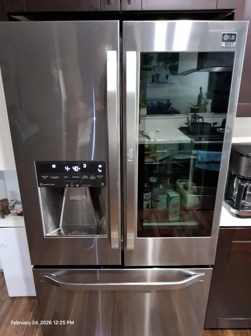

LG Refrigerator Repair: Repair vs Replacement, How to Make the Right Decision
When a refrigerator develops a major problem, one of the first questions homeowners ask is whether the appliance should be repaired or replaced. The answer is not always straightforward. While some refrigerator problems can be resolved quickly and cost effectively, others may involve multiple components or significant system failures. Understanding the factors that influence this decision can help homeowners make an informed choice and avoid unnecessary expenses.
Modern LG refrigerators are sophisticated appliances that often represent a significant investment. Many models include advanced cooling systems, inverter compressors, smart technology, electronic controls, ice makers, and energy efficient features designed to provide years of reliable service. Because of this, replacing a refrigerator is usually far more expensive than most homeowners initially expect. Professional LG refrigerator repair can often restore appliance performance and extend its lifespan for many additional years.
One of the most important factors to consider is the nature of the problem itself. Not every cooling issue, error code, water leak, or unusual noise indicates that the refrigerator has reached the end of its useful life. In many cases, a failed sensor, fan motor, water valve, control board, or other component can be repaired or replaced without affecting the long term reliability of the appliance. Professional diagnostics help determine the exact source of the problem before replacement is considered.

The age of the refrigerator also plays an important role in the decision making process. A relatively new refrigerator that develops a repairable problem is often a strong candidate for professional LG refrigerator repair. On the other hand, an older appliance with multiple unrelated issues may require a more detailed evaluation. However, age alone should never be the deciding factor. Many refrigerators continue operating reliably for years after major repairs when the cooling system and overall appliance condition remain strong.
Cooling system performance is another key consideration. Refrigerators depend on compressors, evaporator systems, condensers, fans, sensors, and electronic controls working together correctly. If diagnostics show that the majority of the cooling system remains in good condition, repairing a specific failed component may provide excellent value. Professional LG refrigerator repair focuses on evaluating the entire appliance rather than looking only at the visible symptom.
Many homeowners are surprised to learn that symptoms can be misleading. A refrigerator that stops cooling may appear to have suffered a major failure, but the actual cause could be a relatively minor component. Likewise, an ice maker problem, temperature fluctuation, or electronic error code may seem serious while requiring only a targeted repair. Accurate diagnostics often prevent unnecessary refrigerator replacement and help homeowners make decisions based on facts rather than assumptions.
Another factor worth considering is appliance efficiency. Modern LG refrigerators are designed to operate efficiently and maintain stable temperatures. If a repair restores proper performance and energy efficiency, continuing to use the refrigerator may offer significant long term value.
Replacing an appliance simply because one component failed may not always be the most economical solution.The availability of replacement parts also influences repair decisions. Professional LG refrigerator repair technicians have access to specialized parts and diagnostic information that help restore many refrigerator systems to proper working condition. Components such as control boards, sensors, fan motors, water valves, ice maker assemblies, and other refrigerator parts can often be replaced successfully without requiring full appliance replacement.
Homeowners should also consider the overall condition of the refrigerator. Door seals, shelving, cooling performance, electronic controls, water systems, and cosmetic condition all contribute to the value of a repair. A refrigerator that remains structurally sound and performs well outside of the current problem is often worth repairing when the repair cost is reasonable.
One of the biggest mistakes homeowners make is making a replacement decision before obtaining professional diagnostics. Without knowing the actual cause of the problem, it is impossible to accurately compare repair and replacement options. Professional technicians evaluate cooling performance, electronic systems, airflow, compressor operation, and overall refrigerator condition to provide recommendations based on real diagnostic data.
Professional LG refrigerator repair is about helping homeowners make informed decisions. In many situations, repairing an existing refrigerator provides excellent value, restores reliable cooling performance, and avoids the expense of purchasing a new appliance. In other cases, replacement may be the more practical long term solution. The key is obtaining accurate information before making a decision.
Whether your refrigerator is experiencing cooling problems, compressor concerns, electronic errors, water leaks, or ice maker issues, professional diagnostics remain the best first step. Understanding the true condition of the appliance allows homeowners to compare repair and replacement options confidently while protecting both their investment and their household budget.